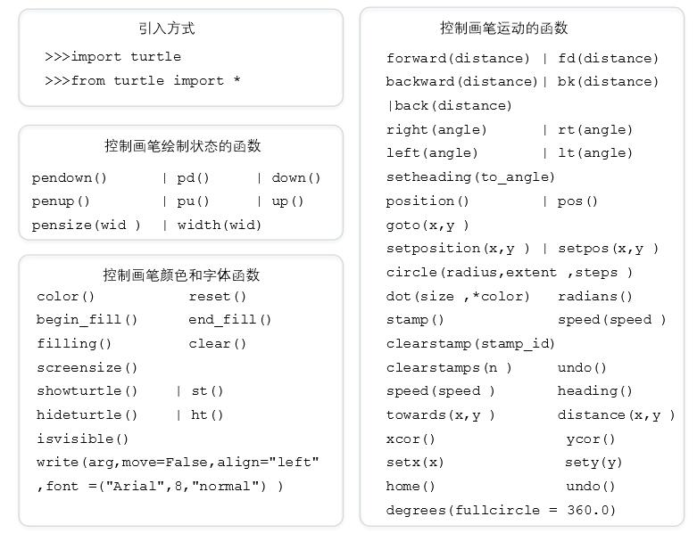
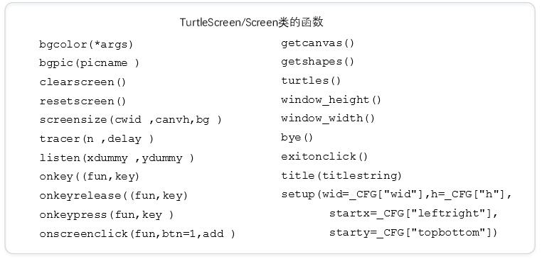

1.编译：将高级语言源代码转换成目标代码（机器语言），程序便可运行。
好处：目标代码执行速度更快；目标代码在相同操作系统上使用灵活。
2.解释：将高级语言源代码逐条转换成目标代码同时逐条执行，每次运行程序需要源代码和解释器。
好处：便于维护源代码；良好的跨平台可移植性。
3.静态语言：编译执行的编程语言，如C、Jave等。
4.脚本语言：解释执行的编程语言，如PHP等。
5.python语言是脚本语言、通用语言、开源语言、跨平台语言和多模型语言。
6.IPO模式：
I：Input 输入，程序的输入；
P：Process处理，程序的主要逻辑；
O：Output输出，程序的输出。
7.程序编写的步骤：分析问题、确定问题（划分IPO模块）、设计算法、编写程序、调试程序、升级维护；
8.缩进: 1缩进 = 4个空格
作用：用以在python中表明代码的层次关系
缩进是python语言中表明程序框架的唯一手段
9.python对函数库引用的方式：
import <库名>，例：import turtle （<库名>.<函数名>）
from <库名> import <函数名>，from <库名> import *
练习1：求π的值。
1 from random import random
2 from math import sqrt
3 from time import clock
4 DARTS=1200 #抛洒点数
5 hits=0 #落在目标1/4圆域内的点数
6 clock() #计时函数
7 for i in range (1,DARTS):
8 x,y = random(),random()
9 dist = sqrt(x**2 + y**2)
10 if dist <=1.0: #表示点落在1/4圆域内
11 hits=hits+1
12 pi = 4 * (hits/DARTS)
13 print("Pi的值是%s" %pi)
14 print("程序运行时间是%-5.5ss"%clock())应用蒙特卡洛方法求解π。蒙特卡洛方法又称随机抽样或统计试验方法去，是利用随机试验求解问题的方法。
练习2：将摄氏度转换为华氏度。
1 val = input("请输入带温度表示符号的温度值(例如: 32C): ")
2 if val[-1] in ['C','c']:
3 f = 1.8 * float(val[0:-1]) + 32
4 print("转换后的温度为: %.2fF"%f)
5 elif val[-1] in ['F','f']:
6 c = (float(val[0:-1]) - 32) / 1.8
7 print("转换后的温度为: %.2fC"%c)
8 else:
9 print("输入有误")练习3：绘制彩色螺旋线
1 import turtle
2 import time #调用库函数
3 turtle.pensize(2) #设置画笔的宽度
4 turtle.bgcolor("black") #设置背景颜色
5 colors = ["red","yellow","purple","blue"] #同时设置多个颜色
6 turtle.tracer(False)
7 for x in range(400):
8 turtle.forward(2*x)
9 turtle.color(colors[x % 4])
10 turtle.left(91) #逆时针移动91°
11 turtle.tracer(True)练习4：绘制太阳花
1 from turtle import * #调用库函数
2 color("red",'yellow') #设置颜色
3 begin_fill() #准备开始填充图形
4 while True:
5 forward(200) #向当前画笔方向移动 200 像素长度
6 left(170) #逆时针移动170°
7 if abs(pos())<1:
8 break
9 end_fill() #填充完成
10 done() #程序中的最后一个语句练习5：绘制螺旋线
1 import turtle
2 import time
3 turtle.speed("fastest") #设置画笔移动速度，画笔绘制的速度范围[0,10]整数，数字越大越快。
4 turtle.pensize(2) #设置画笔的宽度
5 turtle.pencolor("blue") #没有参数传入，返回当前画笔颜色，传入参数设置画笔颜色
6 for x in range(100):
7 turtle.forward(2 * x) #向当前画笔方向移动 2 * x 像素长度
8 turtle.left(90) #逆时针移动90°
9 time.sleep(3) #线程推迟指定的时间运行，单位为秒。练习6：绘制红色五角星
1 from turtle import *
2 fillcolor("red")
3 begin_fill()
4 while True:
5 forward(200)
6 right(144)
7 if abs(pos())<1:
8 break
9 end_fill()练习7：蟒蛇绘制程序。
1 import turtle
2
3 def drawSnake(rad,angle,len,neckrad): #rad描述圆形轨迹半径的位置，angle表示小乌龟沿着圆形爬行的弧度制
4 for i in range(len):
5 turtle.circle(rad,angle) #让小乌龟沿着一个圆形爬行
6 turtle.circle(-rad,angle)
7 turtle.circle(rad,angle/2)
8 turtle.fd(rad) #表示小乌龟向前沿直线爬行移动，参数表示爬行的距离
9 turtle.circle(neckrad+1,180)
10 turtle.fd(rad*2/3)
11
12 def main():
13 turtle.setup(1300,800,0,0) #该函数用于启动一个图形窗口
14 #参数：启动窗口宽度为1300像素、高度为800,（0,0）表示窗口左上角在屏幕中的坐标位置
15 pythonsize = 30
16 turtle.pensize(pythonsize) #运动轨迹的宽度
17 turtle.pencolor("blue") #运动轨迹的颜色
18 turtle.seth(-40) #启动时运动的方向，负值表示相反方向；表示向东南方向40度
19 drawSnake(40,80,5,pythonsize/2)
20
21 main() #main()函数给出了轨迹窗体的大小，爬行轨迹的颜色和宽度以及初始爬行方位turtle库

Turtle Screen/Screen类的函数

在Python中，通常有这几种方式来表示时间：1）时间戳 2）格式化的时间字符串 3）元组（struct_time）共九个元素。由于Python的time模块实现主要调用C库，所以各个平台可能有所不同。
下面我们介绍time模块中常用的几个函数：
1）time.localtime([secs])：将一个时间戳转换为当前时区的struct_time。secs参数未提供，则以当前时间为准。
2）time.gmtime([secs])：和localtime()方法类似，gmtime()方法是将一个时间转换为UTC时区（0时区）的struct_time
3）time.time()：返回当前时间的时间。
4）time.mktime(t)：将一个struct_time转化为时间。
5）time.sleep(secs)：线程推迟指定的时间运行。单位为秒。
6）time.clock()：这个需要注意，在不同的系统上含义不同。在UNIX系统上，它返回的是“进程时间”，它是用秒表示的浮点数（时间戳）。而在WINDOWS中，第一次调用，返回的是进程运行的实际时间。而第二次之后的调用是自第一次调用以后到现在的运行时间。（实际上是以WIN32上QueryPerformanceCounter()为基础，它比毫秒表示更为精确）
7）time.asctime([t])：把一个表示时间的元组或者struct_time表示为这种形式：'Sun Jun 20 23:21:05 1993'。如果没有参数，将会将time.localtime()作为参数传入。
8）time.ctime([secs])：把一个时间（按秒计算的浮点数）转化为time.asctime()的形式。如果参数未给或者为None的时候，将会默认time.time()为参数。它的作用相当于time.asctime(time.localtime(secs))。
9）time.strftime(format[, t])：把一个代表时间的元组或者struct_time（如由time.localtime()和time.gmtime()返回）转化为格式化的时间字符串。如果t未指定，将传入time.localtime()。如果元组中任何一个元素越界，ValueError的错误将会被抛出。
10）time.strptime(string[, format])：把一个格式化时间字符串转化为struct_time。实际上它和strftime()是逆操作。